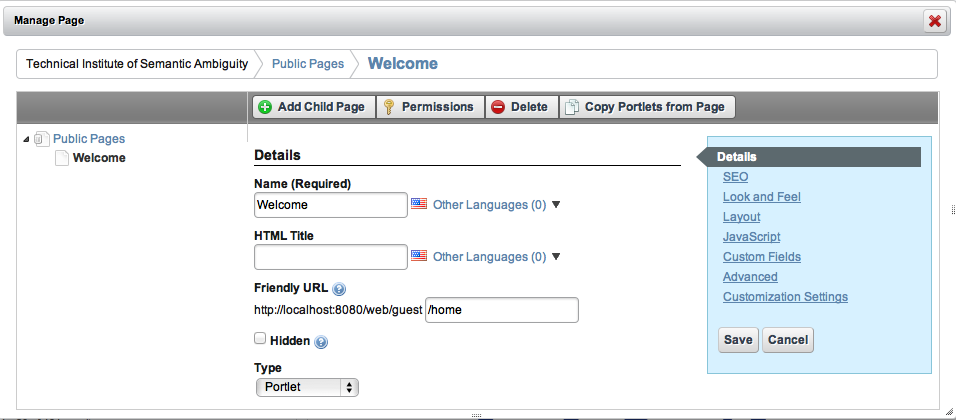
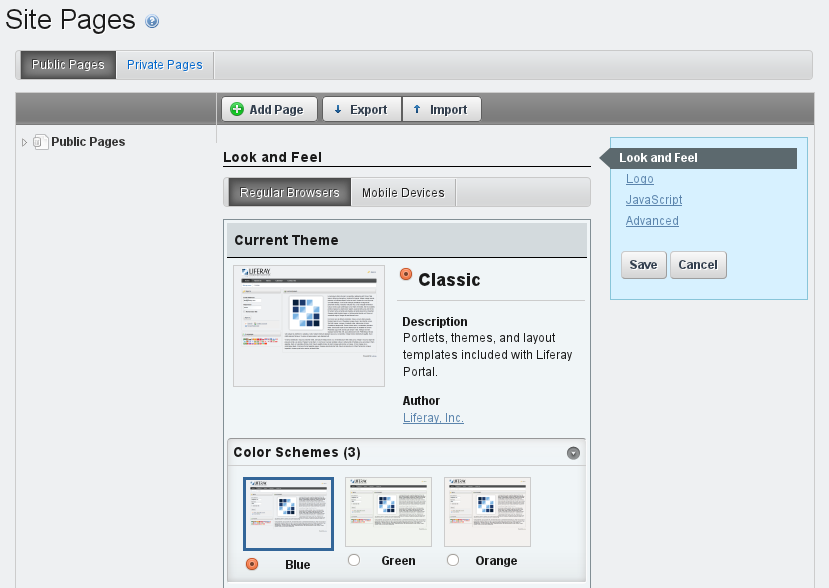

Preparing a liferay page
You have a few options for accessing the page creation interface. To simplify this, we’ll cover the Dockbar’s Manage menu slightly out of order. There are two interfaces to be aware of: Site Pages and Page. You can get to these from multiple places. Depending on what you’re editing and where you are on the portal, you’ll use either the Manage menu or the Control Panel to work with your pages. From the Control Panel, make sure you have the correct site selected in the context menu selector and click the Site Pages link in the content section. If you’ve already navigated to the site you wish to manage, click Manage from the Dockbar and select Site Pages. This is the exact same interface you see in the Control Panel. To manage the specific page of the site you’ve navigated to, click Manage and select Page.

For convenience, you can also navigate to the Sites page under the Portal section of the Control Panel and click Actions → Manage Pages. To quickly add a single page while to the site you’re browsing, click Add from the Dockbar and select Page. Just enter a name for the page and it’s added immediately. Click the name of the page in the navigation menu to visit it and start working on it.

Site Pages is an interface to view existing pages, create new pages, view pages and export or import pages using Liferay Archive (LAR) files. Note that you can switch between managing a set of pages and managing a single page using the left-hand side navigation menu. Click on Public Pages or Private Pages to manage the group or click on an individual page to manage just that one. Switching views like this changes the list of available tabs to the right. By default, liferay.com, which we renamed to nosester.com, contains a single public page called Welcome.
Liferay’s page groups are always associated with sites. Even users’ personal pages are part of their personal sites. All pages belong to one of two types of page sets: public pages and private pages. By default, public pages are accessible to anyone, even non-logged in users (guests). Private pages are accessible only to users who are members of the site which owns the pages. This means the private pages of an organization’s site would only be viewable by site members and members of the organization.
Regardless of whether the pages are public or private, Liferay uses the same interface to manage them.
Created with the Personal Edition of HelpNDoc: Free PDF documentation generator